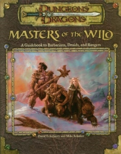

“Masters of the Wild” on the
Shelf of Many Books

Masters of the Wild: A Guidebook to Barbarians, Druids, and Rangers
D&D 3.0
(3e)
Year
: 2002 (February)
Masters of the Wild
on Amazon
Masters of the Wild
on DriveThruRPG
Masters of the Wild
on TSR Info
Known monsters from the book:
Bogun
Dire Elephant
Dire Elk
Dire Hawk
Dire Horse
Dire Snake
Dire Toad
Legendary Ape
Legendary Bear
Legendary Eagle
Legendary Horse
Legendary Shark
Legendary Snake
Legendary Tiger
Legendary Wolf